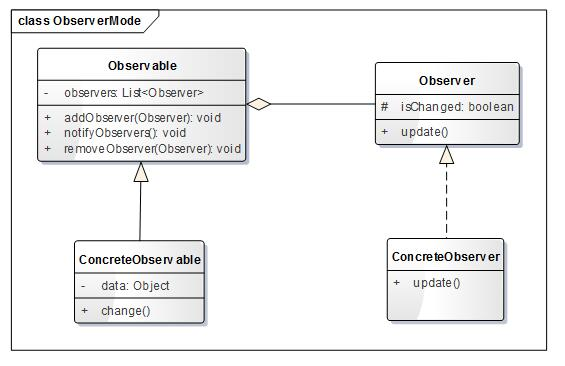

当一个对象的行为依赖于另一个对象的状态时，观察者模式就相当有用。 若不使用观察者模式提供的通用结构，则只能在另一个线程中不断监听对象所依赖的状态
经典结构图： 
ISubject接口
public interface ISubject {
public void attach(IObserver o);
public void deattach(IObserver o);
public void inform();
}
IObserver接口
public interface IObserver {
public void update(Event evt);
}
ConcreteSubject实现
import java.util.*;
public class ConcreteSubject implements ISubject{
private List<IObserver> observers = new ArrayList<IObserver>();
@Override
public void …